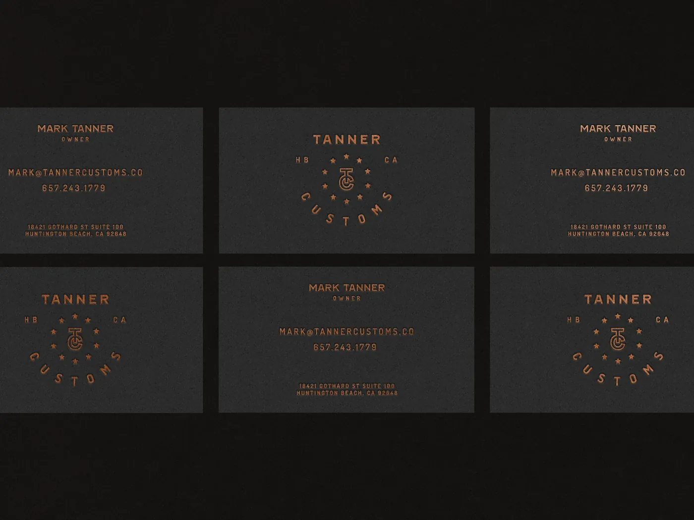
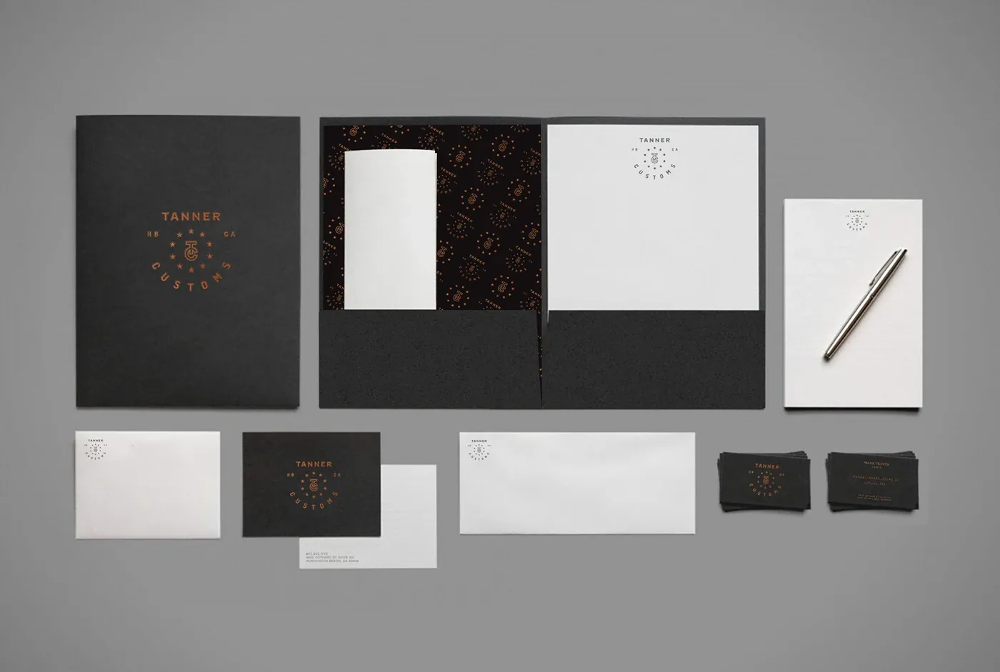
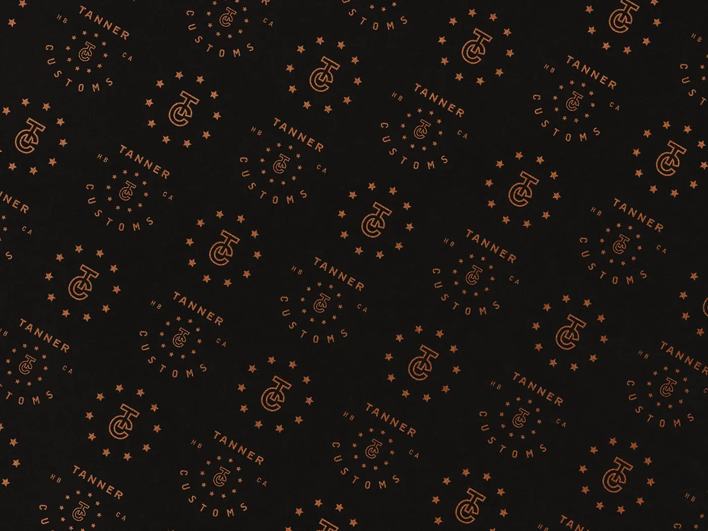
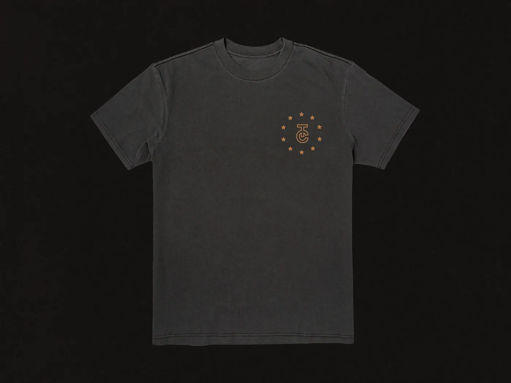
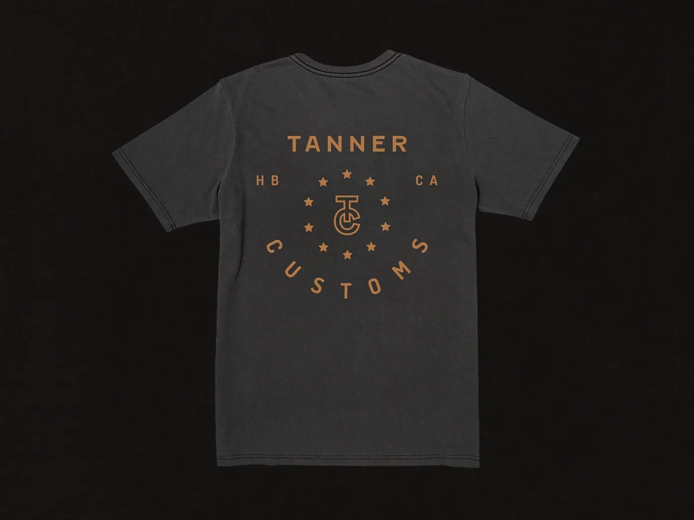

Jordan Darby Design
Jordan Darby DesignTanner Customs
A vintage-Americana badge for a father-and-son motorcycle shop.
Tanner Customs is a brand I created from scratch — premise, positioning, name, and design — to explore a real category problem. A self-initiated concept, not a client engagement.

The Premise
Tanner Customs is a brand I invented — a father-and-son custom motorcycle shop that turns base bikes into something unique. I gave myself the brief such a shop would actually give a designer: minimal, masculine, and it has to look great on a t-shirt.
The Challenge
A shop like this lives in a world of vintage Americana — hand-painted signs, old-school posters, worn enamel. The identity had to come from that world without tipping into pastiche, and it had to survive being embroidered, printed, and foil-stamped.
The Approach
I researched vintage American badges and built an original wordmark emblem that stylistically harkens back to the early days of branding. The mark is deliberately simple in construction so it holds together at any size and reproduces cleanly across print, apparel, and foil.
“I researched vintage American badges and created an original wordmark emblem that harkens back to those early days of branding.”




The Result
The emblem does the job on both ends of the range: refined enough for foil-stamped business cards, bold enough to carry a shirt on its own.
He is excellent in the way he collaborates with clients to help bring their vision to life. Jordan is upbeat, extremely positive, a hard worker, and a fantastic teammate that I have relied on multiple times in critical situations.

Ryan Toomer
Head of Sales while I was at Dare Devil Display WorksWant this kind of thinking on your brand?
Tell me about your brand or packaging challenge — I’ll come back with ideas and clear next steps.
Free, no-pressure consult · Same-day reply to most inquiries
✉ Start a Project